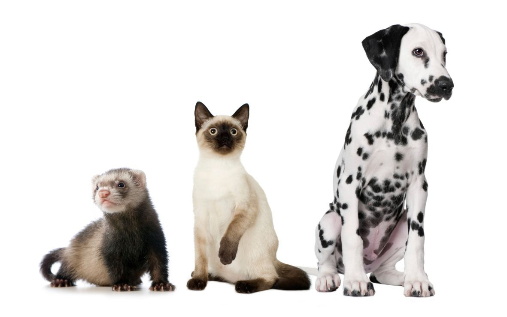

¿Qué esperas para aprender más sobre tu mascota o el mundo animal? Si el mundo de los animales te fascina, en ExpertoAnimal descubrirás infinidad de consejos, fotos y vídeos desarrollados por expertos y otros miembros de la comunidad. Comparte, recomienda y, sobre todo, aprende.
ExpertoAnimal es la página web de animales de referencia, en la que descubrirás contenido de calidad elaborado por distintos profesionales del sector, como veterinarios, adiestradores y educadores caninos, expertos en etología, auxiliares técnicos veterinarios y periodistas especializados. Nuestra filosofía se fundamenta en el respeto por los animales, la tenencia responsable, la educación basada en la etología y la defensa de los derechos animales. También apoyamos la adopción de perros y gatos y, por ello, colaboramos con varias asociaciones, fundaciones y protectoras.
Información veterinaria, estilos de adiestramiento canino en positivo, información enciclopédica, cuidados de los animales domésticos o información previa a la adopción de animales son algunas de las temáticas que podrás encontrar aquí. ExpertoAnimal sorprende con una gran variedad de temas y destaca principalmente por su veracidad, ya que todo el contenido de la web está revisado y validado por profesionales y expertos en animales. Además, siempre que es necesario, los artículos incluyen bibliografía para que los usuarios y otros profesionales puedan acceder también a contenido útil y de calidad relacionado con el mundo animal, así como comprobar la autenticidad de la información.
Nuestro objetivo es ayudar a todas aquellas personas que lo necesiten y lograr que ExpertoAnimal se convierta en la mejor página web de animales, trabajando diariamente para llegar a ser la comunidad más activa de habla hispana. ¡Conviértete en un auténtico ExpertoAnimal!
En la sociedad en la que vivimos es cada vez más común que los hogares tengan más de un animal de compañía y, además, que no pertenezcan a la misma especie. Por este motivo, hay que conocer bien cómo se comunica cada animal y si podrá o no relacionarse con otros, especialmente cuando se trata de mascotas no tan comunes, como son los hurones.
Mientras que gatos y hurones tienen una relación más amenas, con los perros el asunto se complica un poco, ya que depende mucho más del carácter del perro y de la raza. Cristina Soriano, veterinaria integrativa con experiencia en hurones de más de 12 años y "mamá" de una familia compuesta por cuatro hurones, un perro y un gato, explica que la convivencia entre perros y hurones es posible, pero con muchos "peros". Así como en otras especies es claramente un 'no' (conejos, cobayas o pequeños roedores, ya que estás juntando al depredador con su presa), en el caso de los perros sí es viable pero hay que tener en cuenta los periodos de socialización y realizar las presentaciones paulatinamente. Hay que ser conscientes de que los hurones, además de depredadores, son presas, y hay perros que tienen un tipo de agresividad (agresividad depredadora) que no es compatible con la tenencia de hurones ya que éstos son "pequeños escurridizos y hacen movimientos de presa que despertarán los instintos de caza del can" En cualquier otro caso, lo ideal es que durante los periodos de socialización conozcan a la otra especie, pero si esto no es posible, se deberán hacer las presentaciones e introducciones del nuevo miembro poco a poco, bajo vigilancia, intentando que no haya malas experiencias para que no asocien al otro animal con algo negativo
Cuando se introduce un hurón al hogar donde ya hay un gato, el contacto debe realizarse gradualmente protegiéndolo de un movimiento inesperado y observando la reacción del gato. Los hurones y los gatos pueden ser potencialmente compañeros siempre que se les haya dado tiempo para conocerse y ver las reacciones de cada uno. Si se teme que el gato sea agresivo es conveniente introducir al hurón a una jaula en la que no tenga acceso el gato y dejarlo ahí para estudiar el comportamiento del felino.

Ingresando tu correo y número recibiras todos los viernes, Información veterinaria, estilos de adiestramiento, información enciclopédica, cuidados de los animales domésticos, curiosidades de nuestras mascotas, información previa a la adopción de animales, belleza, salud, información y mucho más sobre nuestras mascotas en tu correo si te registras ahora!